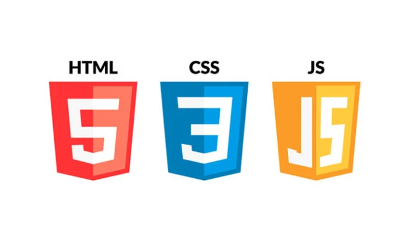

Frontend Geliştirici Olmak
Frontend geliştirme, kullanıcı arayüzü tasarımı ve etkileşimlerinin kodlandığı alandır. HTML, CSS ve JavaScript bu alanda en çok kullanılan teknolojilerdir.
- HTML ile yapı kurulur
- CSS ile stil verilir
- JavaScript ile etkileşim sağlanır
Daha fazla bilgi için MDN Web Docs sayfasına göz atabilirsiniz.
Git ve GitHub Kullanımı
Git, projeleri versiyonlamak için kullanılan güçlü bir araçtır. GitHub ise bu projeleri internet üzerinde barındırmanıza olanak tanır.

- Git kurulumu yap
- Yeni bir repo oluştur
- Commit ve push işlemleri ile projenizi güncel tut
Detaylı anlatım için Git Dokümantasyonu adresini ziyaret edebilirsiniz.
Mobil Uygulama Geliştirme
Flutter gibi modern teknolojilerle çapraz platform mobil uygulamalar geliştirebilirsiniz. Tek bir kod tabanı ile hem Android hem de iOS için uygulama oluşturmak mümkündür.
- Flutter kurulumunu yap
- Widget yapısını öğren
- Firebase ile entegrasyon kur
Flutter hakkında daha fazla bilgi için flutter.dev sitesini inceleyin.